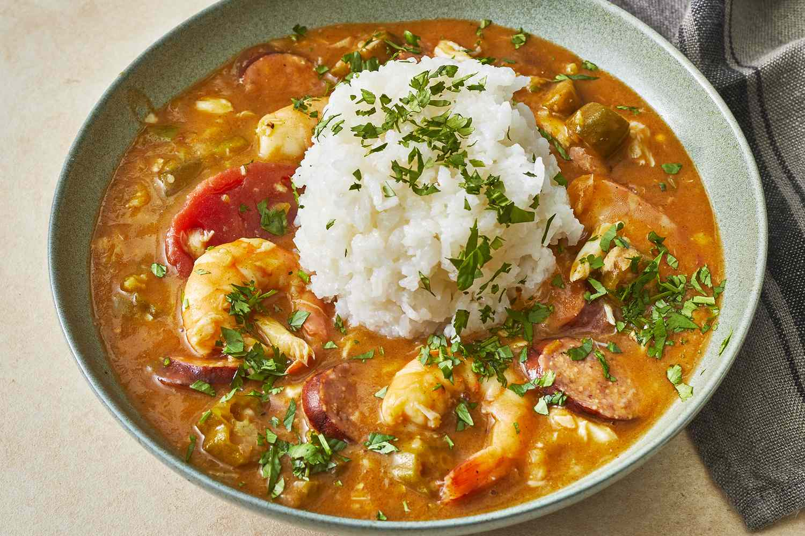

Gumbo

Gumbo for Gummos
Gumbo oh so yummy. So delish it make you go dummy. No gumbo make a good day crummy. Make you warm in winter and sweat in summy.
What goes in the pot
- ½ cup all-purpose flour
- 2 tablespoons vegetable oil
- 2 cups chopped onions
- 2 cups chopped green bell pepper
- 6 cloves garlic, chopped
- 2 teaspoons dried thyme
- 2 bay leaves
- 1 pound Italian sausage
- 3 (14.5 ounce) cans diced tomatoes with juice
- 1 pound cooked, shredded chicken
- 2 cups chicken broth
- 1 ½ cups spicy tomato-vegetable juice cocktail (such as V8®)
- 4 teaspoons Creole seasoning
- 1 pound uncooked shrimp - peeled, deveined, and tails removed
- salt and ground black pepper to taste
Cooking Steps
- Cook and stir flour in a large, heavy pot over medium-low heat until flour turns golden brown, about 15 minutes. Pour browned flour into a bowl and return pot to heat.
- Increase heat to medium and add oil to the pot. Cook and stir onions and bell peppers in hot oil until slightly softened, about 7 minutes.
- Stir garlic, thyme, and bay leaves into onion mixture; cook and stir for 1 minute. Add sausage to onion mixture and cook and stir until browned and crumbly, 5 to 10 minutes.
- Stir diced tomatoes with juice, shredded chicken, chicken broth, vegetable juice cocktail, browned flour, and Creole seasoning into sausage mixture. Bring to a boil, reduce heat to low, cover the pot, and simmer, stirring often, until mixture is hot and flavors blend, 20 to 30 minutes.
- Pour shrimp into sausage-chicken mixture; bring to a simmer. Cook shrimp until they are pink on the outside and the meat is no longer transparent in the center, about 5 minutes.
- Discard bay leaves. Season gumbo with salt and pepper to taste.